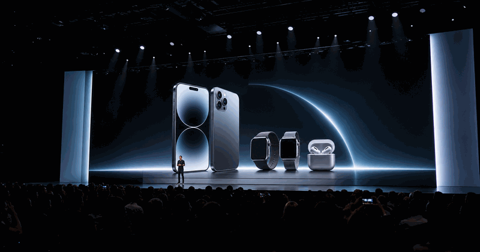
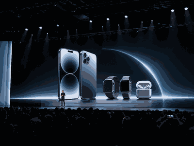

Apple September Event
Apple's fall product keynote is the consumer-tech moment people watch for new iPhone, Apple Watch, AirPods and platform-release details.

More Consumer ElectronicsConsumer Electronics topicMajor launches, device showcases and hardware calendar moments.
Next Apple September Event
Apple had not published a September 2026 event date on its official Newsroom events listing when this page was updated.
The page should be updated when Apple posts the official invite or Newsroom event listing.
The September event usually matters because it turns device rumors into shipping details.
Do not add third-party stream links unless Apple confirms them.
Sources: Apple Newsroom Events. Last updated: 1 June 2026.
Apple September Event guide
This is a non-sport event page, so it uses a single framed event guide instead of a year carousel. The date stays as a future watchlist window until Apple confirms the next September event.